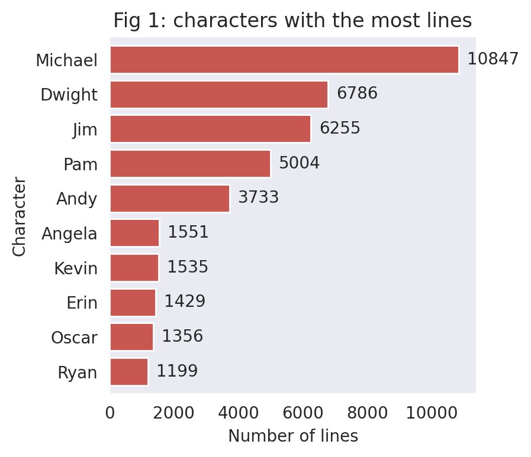
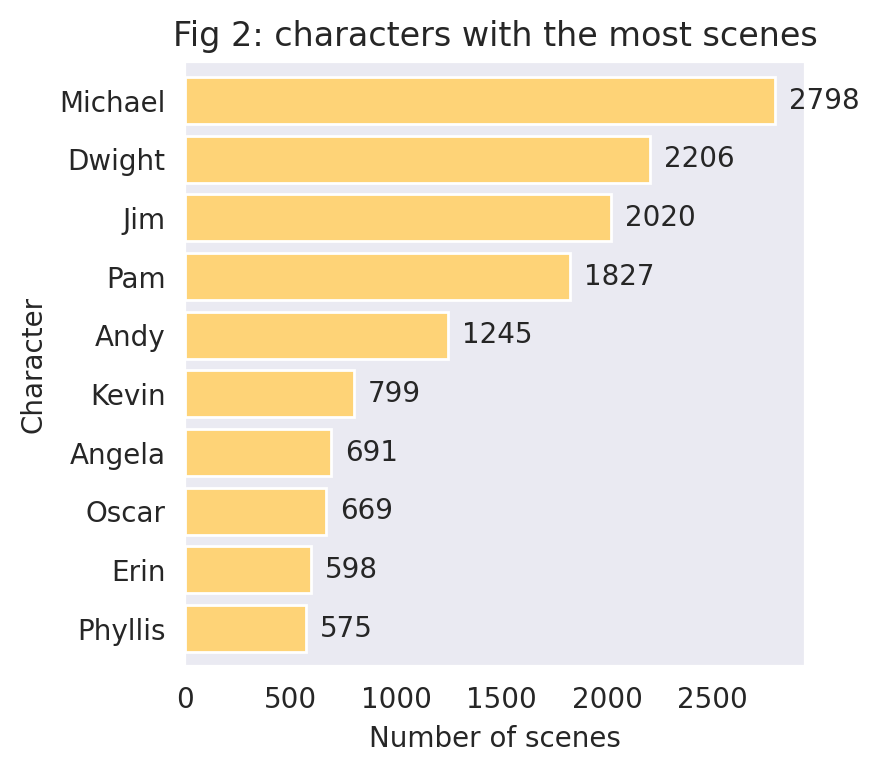
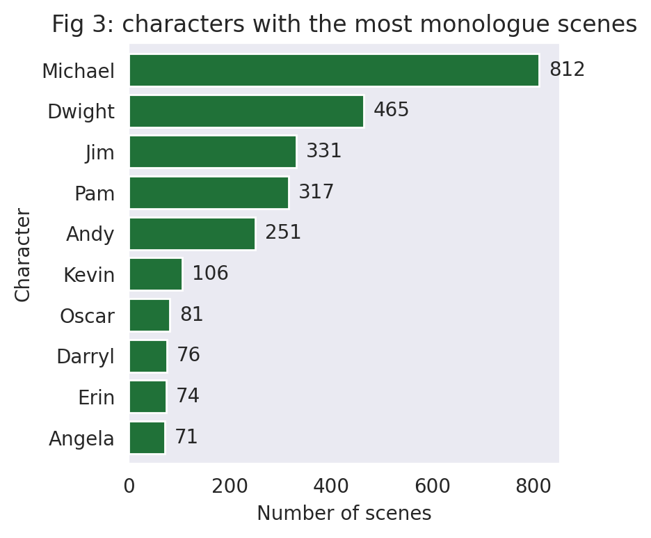
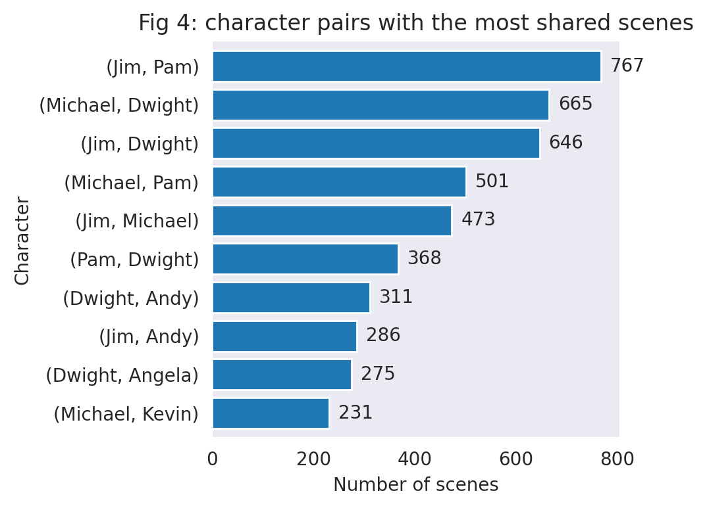

Introduction
| Season |
1 |
2 |
3 |
4 |
5 |
6 |
7 |
8 |
9 |
Total |
| Total Episodes |
6 |
22 |
25 |
19 |
28 |
26 |
26 |
24 |
25 |
201 |
| Total Scenes |
227 |
991 |
1115 |
726 |
1031 |
1022 |
1012 |
929 |
1104 |
8157 |




Character Network by Season
The following graphs show character network by season.
Each point (node) represents a character.
Each line (edge) between two nodes indicates that the two characters have appeared in the same scene.
The width of the edge presents the number of scenes that the two characters share.
The graph applies force-directed graph drawing,
which means that characters who have more shared scenes with various other characters (greater centrality) are more likely to appear
at the center of the graph. Monologue scenes are excluded from the network graphs.
Most of the following tabs contains two graphs.
The first graph shows characters with at least
10 scene interactions.
For most seasons (except for Season 1 and 4), having peripheral characters in the graph causes the core characters to cram together at the center.
Therefore, the second graph shows only characters with at least 40 scene interactions, so that we can get a better sense of
the relationship among the core characters. "All Seasons" tab contains 3 graphs to help viewers zoom in from periphery to the central characters.
Note: A character's total number of "scene interactions" is the sum of the number of other characters
in every scene that the character appears in. For character A, interacting with character B in two separate scenes
counts as two scene interactions. Interacting with character C and character D in one scene also counts as two scene interactions.
Endnote:
This project is still a work in progress. The next step is to engage in text analysis of the lines
in The Office script.
If you have new observations about the network
graphs or suggestions for directions of further visualization and analysis, please email me.
Leave your preferred name in the email if you'd like me to credit you for new updates.